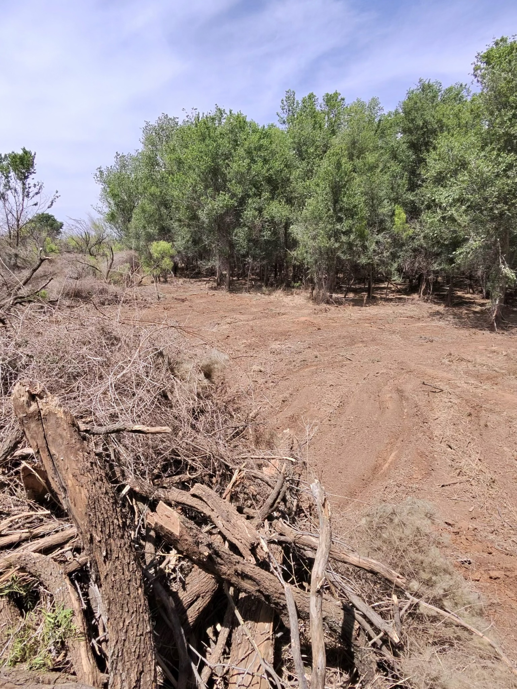
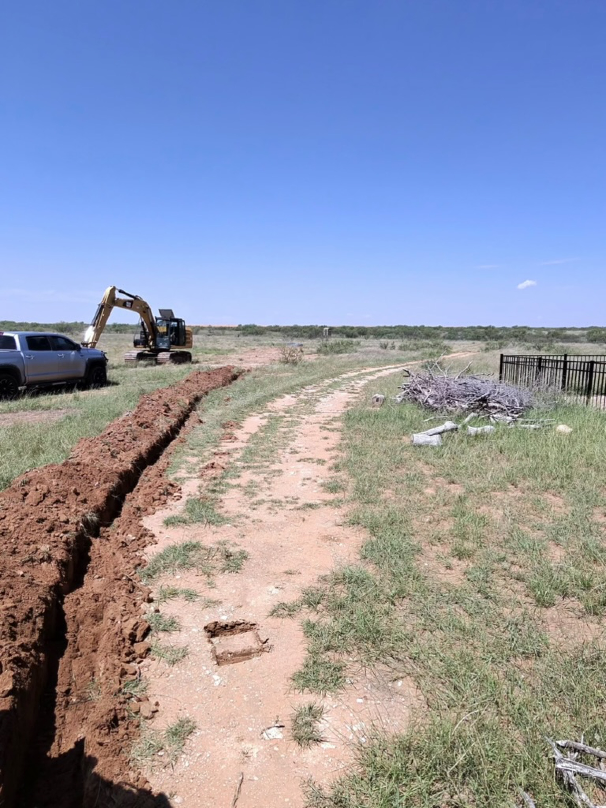
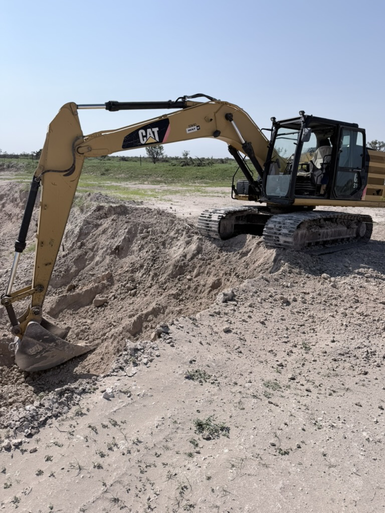
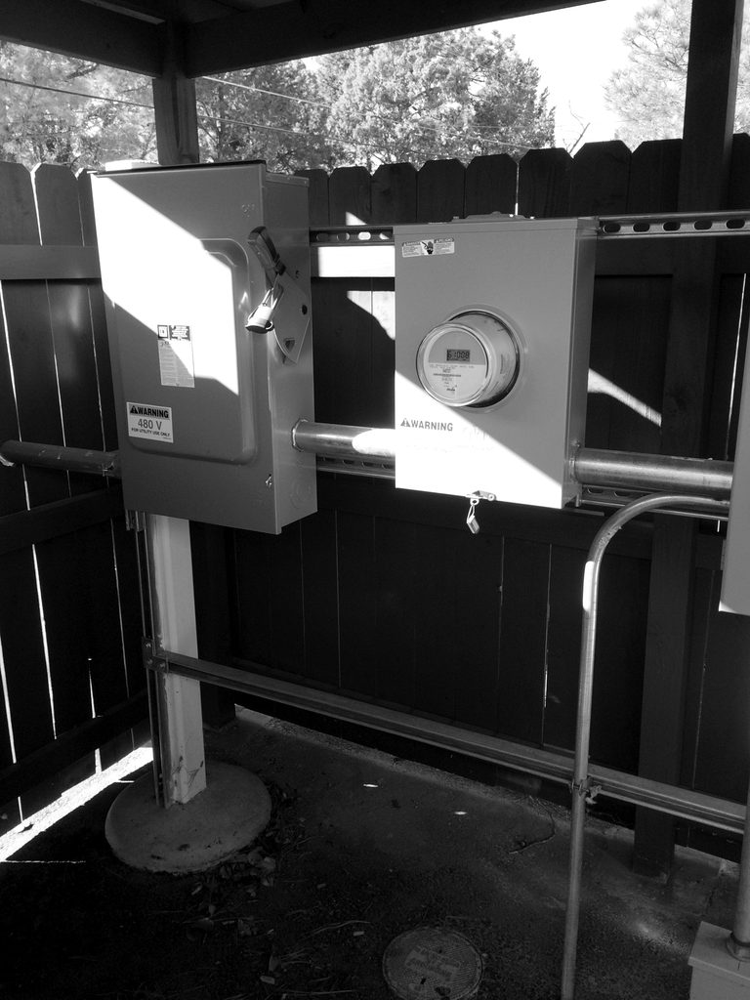
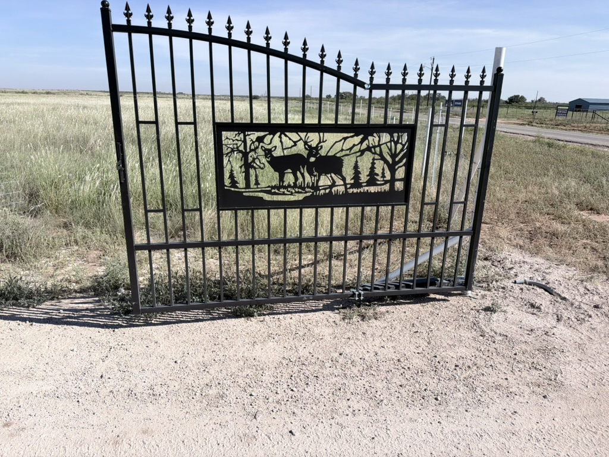

Electrical. Solar. Welding. Operating. Construction. Ranch builds. Plumbing — and the work that keeps a place running. 28 years in construction. Straight talk. Show up. Get it done. We build long-term working relationships. Straightforward prices, hard work, and a job worth calling us back for.
Cross Buck Construction — Wolfforth, Lubbock, Brownfield, Lamesa, Midland, Odessa, Big Spring, Snyder, Sweetwater, Amarillo, Muleshoe TX, and Hobbs NM. From the fence line to the pour, power to plumbing. Named for the X-brace (a cross buck) that holds a gate true.
Trades, ranch builds, and general work.

Licensed electrician. Electrical work from service upgrades and new installations to motors and pumps — plus shops, barns, houses, circuits, lighting, outlets, and troubleshooting.
Electrician in Wolfforth · Electrician in Lubbock · Barn and well pump wiring

Pads, footings, flatwork, pours, and structural framing for sheds, additions, and ranch buildings.

Ranch and farm plumbing, water lines, and pipeline. Livestock troughs, shop and house lines, repairs, and replacements.
Property odds-and-ends, small demos, load-and-dump runs, “someone’s got to fix it” jobs around the place. If it’s legal, safe, and we can scope it, we’ll tell you straight whether we can take it.
“Great experience with this electrical contractor. They handled our panel upgrade quickly and safely, walked us through what they were doing, and didn’t try to upsell extra work we didn’t need. Clean, licensed, easy to work with, highly recommended.”
Short answers from Cross Buck Construction about electrical work in West Texas and Eastern New Mexico.
Work in view: clearing, trenching, excavation, electrical service, and a decorative gate.





We serve West Texas and Eastern New Mexico, from Hobbs, NM to Sweetwater to Amarillo to Muleshoe, TX. Towns include Wolfforth, Lubbock, Brownfield, Lamesa, Midland, Odessa, Big Spring, Snyder, Sweetwater, Amarillo, Muleshoe TX, and Hobbs NM.
Not sure if you’re in range? Message with your town — we’ll say yes or no without the runaround.
No runaround. Clear scope, fair price, finished job.
Call, text, or send photos. We scope what’s real — materials, access, dump fees, timeline.
What’s included, what isn’t, and when we can start. No mystery line items.
Show up, do the work, leave it usable. You know who to call if something needs a follow-up.
Electrical, dirt work, plumbing, fence, pour, frame, or “just need it done.” Send location and photos if you can.
Contact Cross Buck